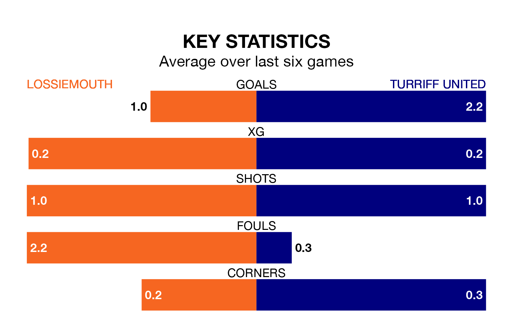

Lossiemouth host Turriff United on Saturday at Grant Park in the Highland Football League.
In their last league match, on March 30, Lossiemouth drew with Turriff United 0-0 away.
Turriff won, 7-1 at home against Strathspey Thistle on April 6.
In the last 10 years, Lossiemouth and Turriff have played each other on 13 occasions. Lossiemouth won four of them, Turriff seven, and they drew twice.
On average, Lossiemouth scored 1.1 goals and Turriff 1.8 in those matches.
Their last meeting was on March 30, when they played out a 0-0 draw.
With 36 goals in 32 games so far this season, Lossiemouth are scoring at below the league average rate with 1.1 goals per game. And they are conceding more than average, letting in 62 goals at a rate of 1.9 per game.
Turriff, meanwhile, are above average scorers, with 2.4 goals per game, compared to a league average of 1.8. They have conceded 1.9 goals per game.
The home side are 14th in the table after 32 games, of which they have won seven and drawn seven, earning 28 points.
United are five places ahead of Lossiemouth in ninth, with 15 wins and two draws putting them on 47 points.
Lossiemouth are in disappointing form in the Highland Football League, with one win and three draws from their last six games.
With two wins and a draw over that period, the visitors' form is slightly better – they have taken seven points from 18, compared to the hosts' six.
Updated: 14:47 (UTC), 09/04/24